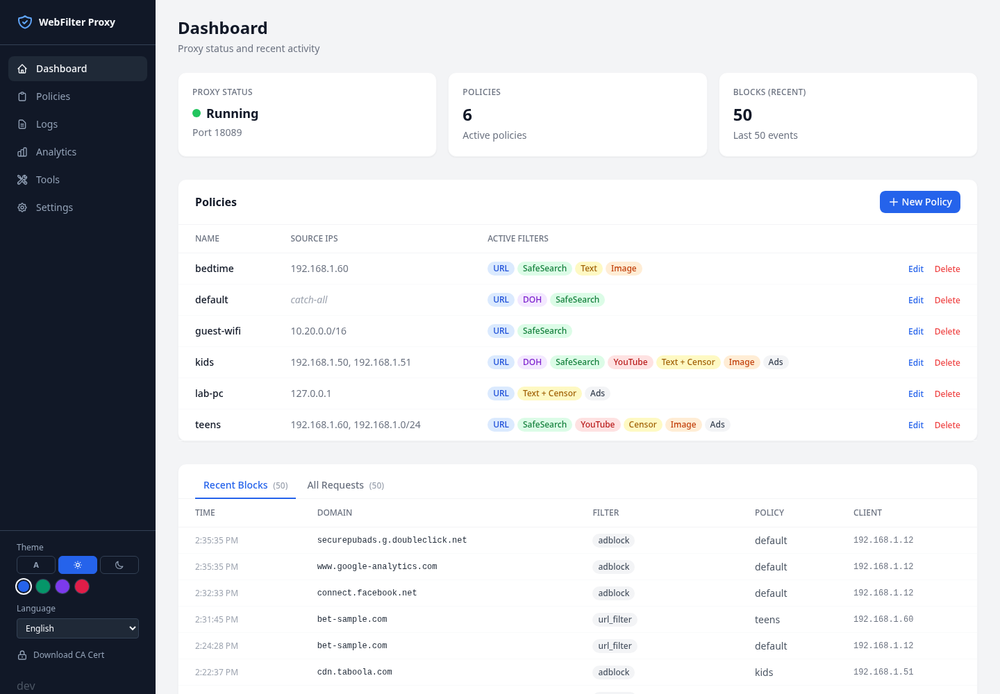
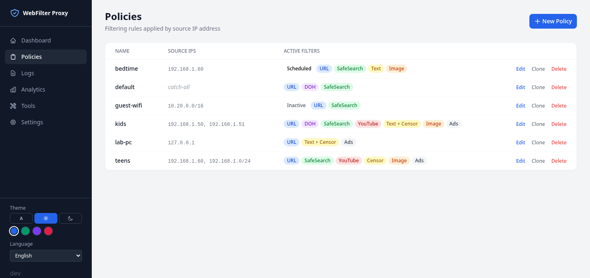
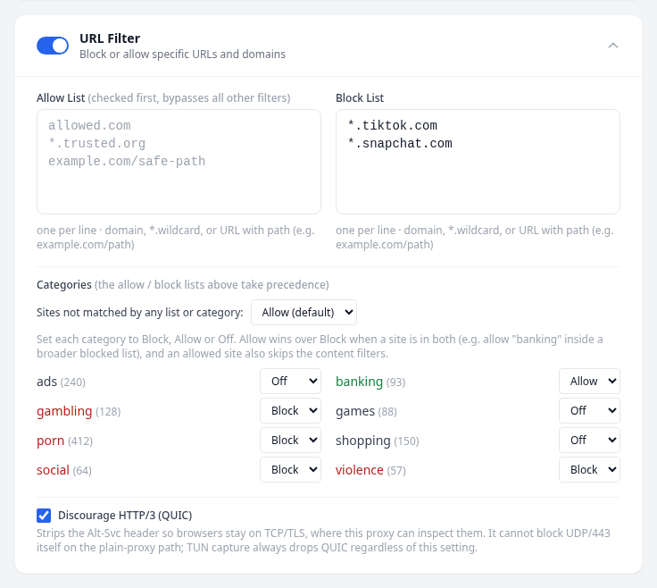
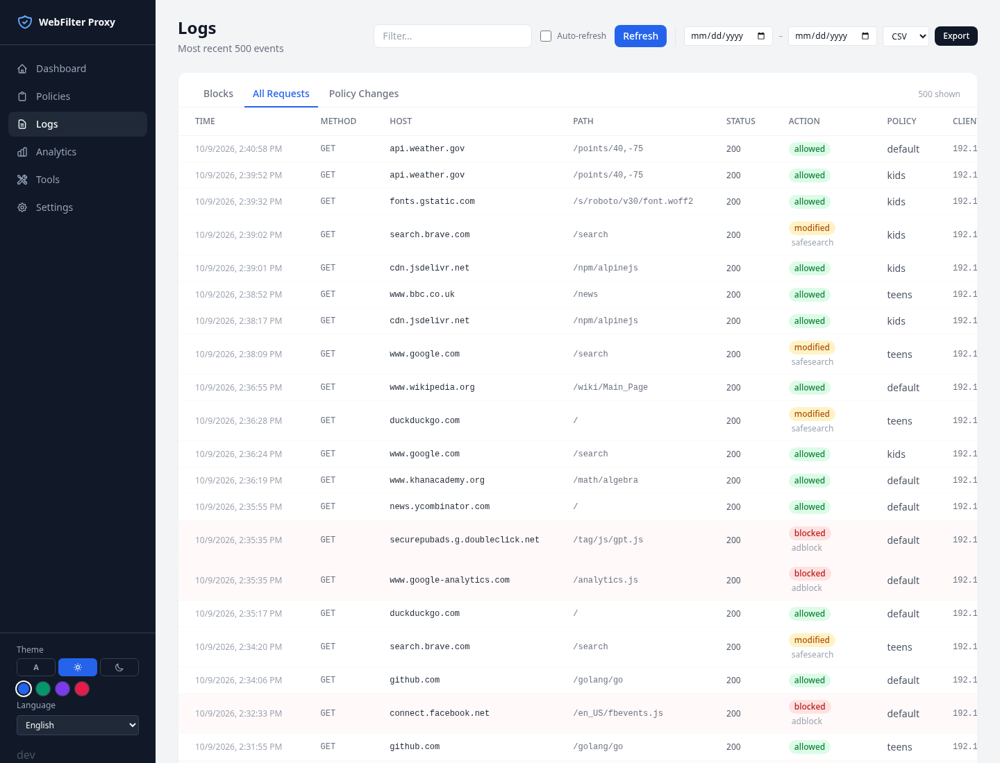

gowebfilter
A single-binary parental-control web filter, written in Go. Download it, run it, manage it from your browser.
Single binary
Written in Go. Just download and run it: no Python, no ML runtime, no sidecar libraries.
Lightweight
The binary is about 30 MB and needs a minimum of about 200 MB of memory. It runs well on a Raspberry Pi, a small VM, or your desktop's localhost.
Parental control, not a general proxy
No complicated ACLs and no policy ordering. A client's IP or MAC is matched to a policy, and a single IP wins over an IP range.
Poor man's classification
Every policy can query a DoH (DNS-over-HTTPS) endpoint, so another service can do the classification for you. You do not have to download and maintain large blocklists, though the standard blocklists are supported too.
Android, no hacks
The Android app does no tricks to enforce itself. Lock it down with an EMM/MDM.
Content filtering
URL and category lists, ad and tracker blocking, SafeSearch, YouTube channel filtering, and embedded pure-Go text and image classifiers.
Quick start
go build -o webfilter ./cmd/webfilter
./webfilter run --settings config/settings.jsonOpen http://127.0.0.1:8000 for the management UI and point clients at 127.0.0.1:8080 as their HTTP(S) proxy. Import certs/ca.crt into each client's trust store so HTTPS filtering does not produce certificate warnings. A Docker image is also available; see the Docker guide.
Screenshots




Scope: a proxy, not an enforcer
gowebfilter is the proxy server and nothing more. It does not currently focus on enforcement. Every platform (Windows, macOS, Linux) and every mode (localhost, LAN, bridge, transparent) is different and needs its own development and testing track, and there are not the resources for that at this time.
You are welcome to integrate it yourself, and documentation contributions are welcome. It is a CLI app with a web interface; there is no native desktop UI.
Disclaimer
This project was built almost entirely through AI-assisted sessions, with a human reviewing direction and testing. It has real test coverage but has not had an independent human security audit. Treat it as a personal or homelab project, not audited security software.